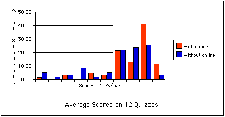
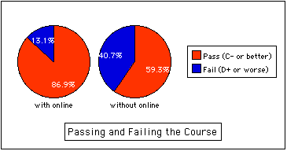

Student Performance
The following data compares a group of precalculus students taught with online homework (n=61) to a group taught without (n=59).
Performance on twelve in-class on-paper quizzes improved.

Fewer students failed.
